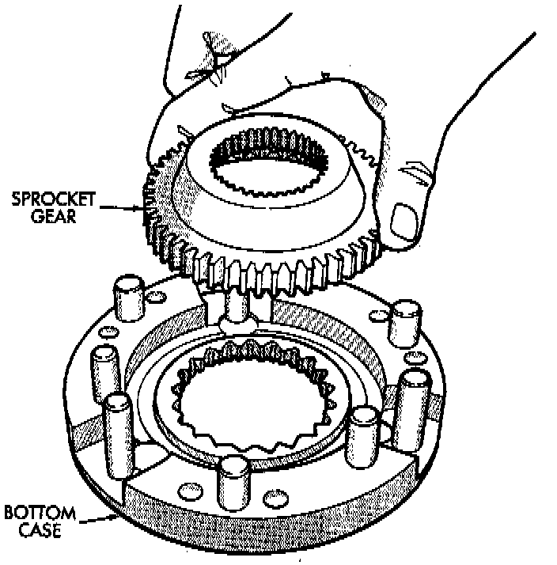
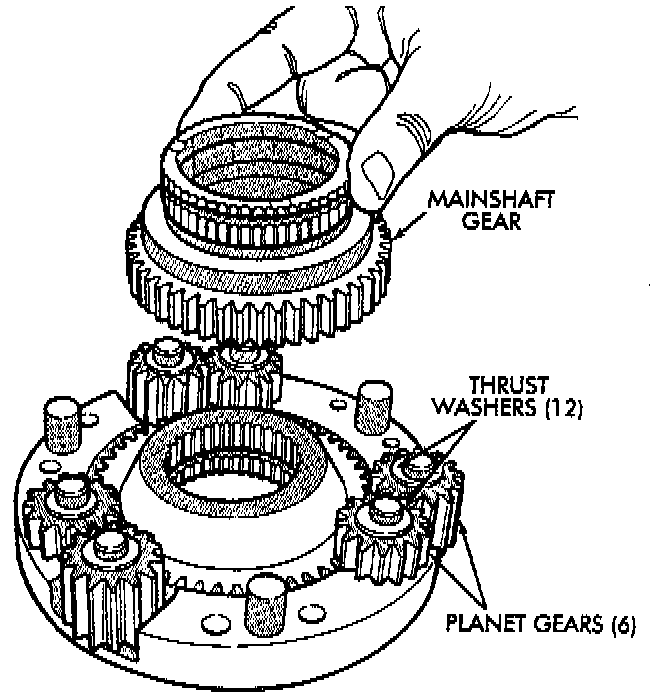
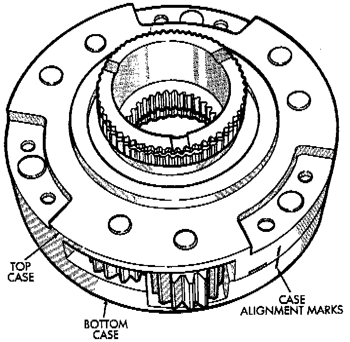

Differential Assembly
1. Lubricate differential components with automatic transmission fluid.
2. Install sprocket gear in differential bottom case.

3. Install differential planet gears and new thrust washers. Be sure thrust washers are installed at top and bottom of each planet gear.
4. Install differential mainshaft gear.

5. Align and position differential top case on bottom case. Align using scribe marks made at disassembly.
6. While holding differential case halves together, invert the differential and start the differential case bolts.
7. Tighten differential case bolts to specified torque.